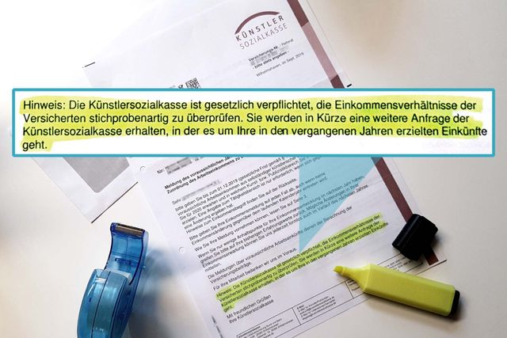
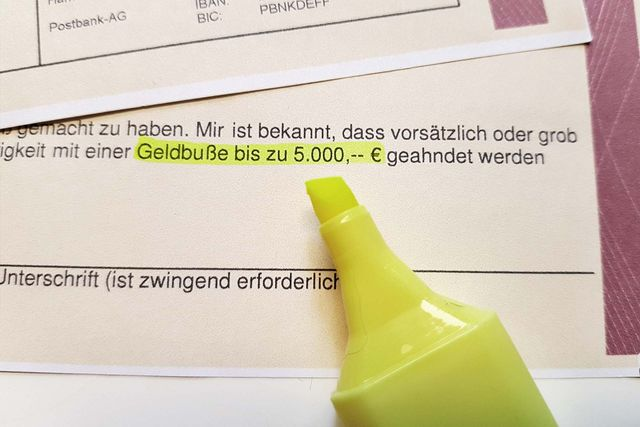

Du bist über die KSK versichert und hast das Schreiben „Meldung des tatsächlichen Arbeitseinkommens für Vorjahre“ erhalten?
Du möchtest Dein KSK-Schreiben und Deine konkrete Prüfungssituation einordnen?
Wenn Du dieses Schreiben erhalten hast, solltest Du es nicht wie eine normale Einkommensmeldung behandeln. Auf dieser Seite erfährst Du, woran Du eine KSK-Prüfung erkennst, welche Folgen falsche oder unvollständige Angaben haben können, was bei zu hoch oder zu niedrig geschätztem Einkommen wichtig ist und warum Du das Formular nicht vorschnell ausfüllen solltest.
Wir informieren und beraten Dich gerne.
Du benötigst Sofort-Hilfe? Wir helfen Dir bei der Einkommensprüfung durch die KSK. Wir konnten bereits viele Freiberufler bei KSK-Prüfungen unterstützen, Risiken frühzeitig zu erkennen, Bußgelder zu verringern oder mögliche Strafen zu vermeiden. Lass Dich deshalb rechtzeitig beraten, bevor Du Angaben machst, bei denen Du Dir unsicher bist.
Mit der Meldung des voraussichtlichen Jahresarbeitseinkommens musst Du als KSK-versicherte Person Deinen Gewinn für das folgende Kalenderjahr schätzen und diese Gewinnprognose abgeben. Diese reguläre Einkommensmeldung ist von einer KSK-Prüfung zu unterscheiden.
Ein älteres Beispiel eines KSK-Schreibens zur Meldung des voraussichtlichen Jahresarbeitseinkommens mit Hinweis auf eine spätere Prüfung findest Du hier. Das Beispiel dient nur zur Orientierung. Form, Jahre und Fristen können sich ändern.
Aber Achtung! Bei etwa 5 % der Schreiben, die die Künstlersozialkasse an ihre Mitglieder verschickt, ist im unteren Bereich ein sehr wichtiger Absatz versteckt, der leicht übersehen werden kann:
„Die Künstlersozialkasse ist gesetzlich verpflichtet, die Einkommensverhältnisse der Versicherten stichprobenartig zu überprüfen. Sie werden in Kürze eine weitere Anfrage der Künstlersozialkasse erhalten, in der es um Ihre in den vergangenen Jahren erzielten Einkünfte geht.“

Wenn Du ein Schreiben mit einem solchen Hinweis erhalten hast, kann eine gesonderte Anfrage zu Deinem tatsächlichen Arbeitseinkommen der Vorjahre folgen. Ein älteres Beispiel des Formulars „Meldung des tatsächlichen Arbeitseinkommens für Vorjahre“ findest Du hier.
Der Sinn der Prüfung: Die KSK gleicht Deine damaligen Schätzungen mit den tatsächlichen Gewinnen aus den Steuerbescheiden ab.
Auch dieses Beispiel dient nur zur Orientierung. Maßgeblich sind immer Dein konkretes Schreiben, die dort angeforderten Unterlagen und die dort genannte Frist.
Sieht Dein KSK-Schreiben so oder ähnlich aus? Dann sei ab jetzt bitte sehr vorsichtig!
Augenscheinlich wirken die Ausfüllhinweise selbsterklärend. Trotzdem liegen die Gefahren im Detail.
Daher unser klarer Rat: Bitte fülle das Dokument nicht vorschnell aus, wenn Du bei Deinem Einkommen, Deinen Tätigkeitsbereichen oder den geforderten Unterlagen unsicher bist.
Prüfe zuerst genau:
Du musst nicht überhastet reagieren. Wichtig ist aber, dass Du fristgerecht antwortest und Dich nicht auf alte Musterformulare oder frühere Fristen verlässt.
Was Deine vollständigen Unterlagen umfassen und was Du in Deinem individuellen Fall beachten solltest, klären wir gerne gemeinsam mit Dir in unserer individuellen Beratung zu Deiner KSK-Prüfung:
Eine KSK-Prüfung kann mehr auslösen als nur Rückfragen zu Deinem Einkommen. Je nach Deinem individuellen Fall können Deine Versicherungspflicht, Deine Kranken- und Pflegeversicherung, Beitragszuschüsse, mögliche Bußgelder oder weitere Prüfungen und Nachweise betroffen sein.

Mindesteinkommen: Ein Ausschluss aus der Versicherung über die KSK kann in Betracht kommen, wenn das jährliche Mindesteinkommen von 3.900 Euro innerhalb von sechs Jahren mehr als zweimal unterschritten wurde. Ein einmaliges Unterschreiten bedeutet daher nicht automatisch, dass Deine Versicherungspflicht sofort endet.
Kranken- und Pflegeversicherung: Eine zusätzliche Beschäftigung oder eine weitere nicht künstlerische bzw. nicht publizistische selbständige Tätigkeit kann Deinen Versicherungsschutz nach dem Künstlersozialversicherungsgesetz (KSVG) beeinflussen. Entscheidend sind Art, Umfang und wirtschaftliche Bedeutung der jeweiligen Tätigkeit. Pauschale Aussagen allein anhand einer einzelnen Monatsgrenze reichen dafür nicht aus.
Je nach Art und Umfang Deiner zusätzlichen Tätigkeit kann sich daraus eine andere sozialversicherungsrechtliche Einordnung ergeben. In solchen Fällen kann die KSK weiterhin Beiträge zur Rentenversicherung verlangen, während für die Krankenversicherung eine andere Absicherung erforderlich werden kann. Dabei können zusätzliche Krankenversicherungsbeiträge von 400 Euro monatlich oder mehr entstehen.
Private Krankenversicherung und Beitragszuschüsse: Wenn Du privat krankenversichert bist und einen Beitragszuschuss der KSK erhältst, können Abweichungen zwischen Deinem geschätzten und Deinem tatsächlich erzielten Einkommen relevant werden. Je nach Deinem konkreten Versicherungs- und Zuschussfall kann es zu Korrekturen oder Rückforderungen kommen. Dabei kann es schnell um vierstellige Beträge gehen.
Viele stellen sich natürlich die Frage: „KSK-Nachzahlung – wie hoch fällt sie aus?“
Ergeben sich bei der Gegenüberstellung Deines gemeldeten Einkommens und Deines tatsächlichen Arbeitseinkommens größere Abweichungen, bedeutet das nicht automatisch, dass bereits festgesetzte monatliche KSK-Beiträge rückwirkend neu berechnet werden. Größere Abweichungen können jedoch weitere oder detailliertere Prüfungen auslösen.
Gerade deshalb geht es bei einer KSK-Prüfung nicht nur darum, Zahlen in ein Formular einzutragen. Entscheidend ist, welche Angaben die KSK konkret prüft, welche Unterlagen verlangt werden und welche Auswirkungen sich daraus für Deinen individuellen Fall ergeben können.
Du möchtest mögliche Folgen Deiner KSK-Prüfung einordnen lassen?
Mit der Meldung des voraussichtlichen Jahresarbeitseinkommens musst Du als KSK-versicherte Person Deinen Gewinn für das folgende Kalenderjahr schätzen und diese Gewinnprognose abgeben.
Das voraussichtliche Jahresarbeitseinkommen ist eine Prognose. Wenn sich Deine Erwartungen im laufenden Jahr ändern, kannst Du der KSK ein geändertes voraussichtliches Arbeitseinkommen mitteilen. Die Änderung wirkt sich grundsätzlich für die Zukunft auf die Beitragsberechnung aus.
Hast Du in den vergangenen Jahren Dein Einkommen zu gering eingeschätzt? Und Du hast jetzt eine KSK-Prüfung – also eine Überprüfung Deines tatsächlichen Arbeitseinkommens für Vorjahre?
Dann befürchtest Du möglicherweise eine hohe Nachzahlung an KSK-Beiträgen.
Die gute Nachricht vorweg: Eine Abweichung zwischen Deiner früheren Einkommensprognose und Deinem späteren tatsächlichen Einkommen führt nicht automatisch zu einer rückwirkenden Nachzahlung bereits festgesetzter monatlicher KSK-Beiträge.
Aber Achtung: Das bedeutet nicht, dass falsche oder unvollständige Angaben folgenlos bleiben.
§ 36 Abs. 1 KSVG sieht für bestimmte vorsätzliche oder fahrlässige Verstöße gegen Melde-, Auskunfts- und Vorlagepflichten Geldbußen von bis zu 5.000 Euro vor. Entscheidend ist deshalb nicht allein, wie groß die Abweichung zwischen Schätzung und tatsächlichem Einkommen war, sondern was konkret gemeldet wurde, welche Pflichten bestanden und wie Dein individueller Fall aussieht.
Hast Du Dein Einkommen dagegen zu hoch geschätzt, können daraus höhere monatliche KSK-Beiträge entstanden sein, die rückwirkend grundsätzlich nicht korrigiert werden.
Betriebswirtschaftlich solltest Du Deine Prognose deshalb möglichst realistisch abgeben und deutliche Veränderungen rechtzeitig berücksichtigen. Aber weder Du noch jemand anderes hat eine Glaskugel zu Hause, die zuverlässig die zukünftigen Gewinne vorhersagen kann.
Genau für dieses Dilemma gibt es zur ersten Orientierung unseren KSK-Beitragsrechner.
Aber Vorsicht! Beiträge und mögliche Bußgelder sind nicht die einzigen Themen. Je nach Deinem konkreten Fall kann die KSK auch prüfen, ob die Voraussetzungen für Deine Versicherung nach dem KSVG weiterhin erfüllt sind.
Du möchtest Deine bisherige Einkommensschätzung vor einer Antwort genau und individuell einordnen?
Du und etwa 10.000 weitere KSK-Versicherte erhalten im Rahmen der Stichprobenprüfung die Aufforderung, Nachweise über das tatsächliche Arbeitseinkommen vergangener Jahre vorzulegen.
Das Wichtigste: Bewahre bei einer KSK-Prüfung Ruhe und antworte nicht vorschnell.
Prüfe zuerst genau, was die Künstlersozialkasse von Dir verlangt, welche Jahre betroffen sind und welche Unterlagen Du tatsächlich einreichen sollst.
Wenn die KSK Dich zur Vorlage von Einkommensnachweisen auffordert, solltest Du strukturiert vorgehen:
Die KSK-Prüfung kann unter anderem der Klärung dienen, ob Deine Angaben vollständig waren und ob Du Deinen gesetzlichen Melde-, Auskunfts- und Vorlagepflichten nachgekommen bist.
Antworte nicht überhastet, aber reagiere fristgerecht auf Dein konkretes Schreiben. Nach Deiner Antwort kann die KSK weitere Unterlagen oder Erläuterungen anfordern.
Erlässt die KSK später einen Bescheid und bist Du mit der Entscheidung nicht einverstanden, kann ein Widerspruch möglich sein. Maßgeblich sind dabei immer die Rechtsbehelfsbelehrung und die Frist im konkreten Bescheid.
Du möchtest Dein Schreiben, Deine Unterlagen und mögliche Abweichungen vor der Abgabe gemeinsam prüfen?
Eine KSK-Prüfung ist eine Überprüfung durch die Künstlersozialkasse. Im Rahmen einer jährlichen Stichprobe bei 5 % der KSK-Versicherten – etwa 10.000 Personen – wird die KSK Nachweise zum tatsächlichen Arbeitseinkommen der vergangenen Jahre anfordern. Abgegeben werden müssen Steuerbescheide und andere Nachweise für maximal sechs vorangegangene Jahre, um diese zu überprüfen und mit Deinen zuvor gemachten Angaben zu vergleichen. Auch die Tätigkeitsbereiche werden hierbei standardmäßig erneut abgefragt. Daneben sind auch anlassbezogene Prüfungen möglich.
Deine laufenden Beiträge beruhen auf dem voraussichtlichen Jahresarbeitseinkommen, das Du im Voraus schätzt und der KSK meldest. Bei einer Stichprobenprüfung wird die KSK später Nachweise zum tatsächlich erzielten Arbeitseinkommen verlangen und Deine Angaben aus zurückliegenden Jahren überprüfen.
Das voraussichtliche Arbeitseinkommen ist Deine Prognose für das kommende Kalenderjahr. Das tatsächliche Arbeitseinkommen ergibt sich später aus dem realen Gewinn Deiner selbständigen künstlerischen oder publizistischen Tätigkeit. Der Unterschied zwischen beiden sollte nicht zu groß sein.
Welche Unterlagen Du brauchst, steht in Deinem konkreten KSK-Schreiben. Bei der aktuellen Stichprobenpraxis kann die KSK insbesondere Einkommensteuerbescheide der zurückliegenden Jahre verlangen. Reiche nicht vorsorglich wahllos Unterlagen ein, sondern orientiere Dich an der konkreten Anforderung.
Maßgeblich ist die Frist in Deinem eigenen Schreiben der Künstlersozialkasse. Verlass Dich nicht auf alte Musterformulare oder frühere Jahresfristen.
Du solltest nicht überhastet antworten. Du solltest das Schreiben aber auch nicht liegen lassen. Prüfe zuerst, welche Angaben verlangt werden, welche Unterlagen dazugehören und welche Frist gilt.
Eine zu niedrige Schätzung führt nicht automatisch zu einer rückwirkenden Korrektur bereits festgesetzter Monatsbeiträge. Problematisch können jedoch unrichtige oder unvollständige Angaben und Verstöße gegen gesetzliche Melde-, Auskunfts- oder Vorlagepflichten sein. Erkennt die Künstlersozialkasse oder die Deutsche Rentenversicherung bei der Überprüfung Deiner Einkommen der Vorjahre systematisch erheblich zu gering geschätzte Einkommensschätzungen, droht ein Bußgeld bis zu einer Höhe von 5.000 Euro.
Nein. Eine Abweichung zwischen Prognose und tatsächlichem Einkommen bedeutet nicht automatisch, dass bereits gezahlte KSK-Beiträge rückwirkend neu berechnet werden. Andere finanzielle oder versicherungsrechtliche Folgen können je nach Sachverhalt trotzdem relevant sein und unterschiedliche Konsequenzen haben.
Wenn die gesetzlichen Voraussetzungen für die Versicherung nach dem KSVG nicht mehr erfüllt sind, kann sich Dein Versicherungsstatus ändern. Ein einmaliges Unterschreiten des Mindesteinkommens führt aber nicht automatisch dazu.
Die KSK prüft Deine Angaben und kann bei Bedarf weitere Unterlagen oder Erläuterungen anfordern. Je nach Ergebnis kann die Prüfung ohne weitere Folgen abgeschlossen werden oder zu einer weiteren Entscheidung über Deinen Versicherungsstatus oder andere Punkte führen.
Gegen einen Bescheid der Künstlersozialkasse kannst Du grundsätzlich Widerspruch einlegen. Bei Versand innerhalb Deutschlands beträgt die Frist grundsätzlich einen Monat. Entscheidend ist die Rechtsbehelfsbelehrung im konkreten Bescheid. Nicht jedes KSK-Schreiben ist ein widerspruchsfähiger Bescheid.
Eine KSK-Beratung kann sinnvoll sein, wenn Du unsicher bist, wie Du das Schreiben verstehen sollst, welche Angaben verlangt werden, welche Unterlagen relevant sind oder welche Folgen in Deinem Fall möglich sein können.
Lass Dein KSK-Schreiben und Deine Unterlagen persönlich einordnen, bevor Du antwortest. So kannst Du Dein weiteres Vorgehen sorgfältig vorbereiten.